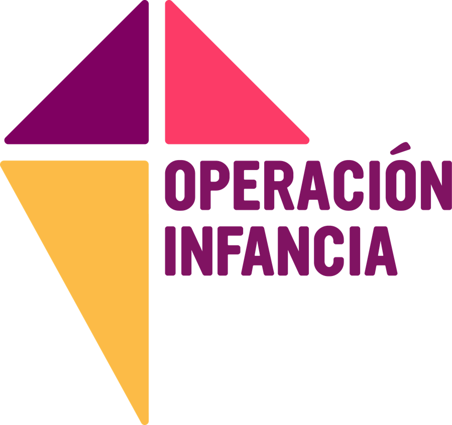

Habilidad socioemocional
Tiempo disponible
Técnicas de facilitación del manual: cómo llamar al círculo, traer la calma, captar la atención antes de una actividad y guiar las reflexiones generales de cada bloque.
Ojo: recién empiecen a explicar cuando todos estén prestando atención — si no, la explicación será en vano.